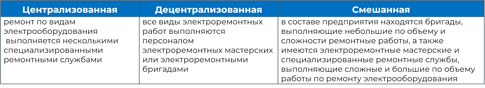
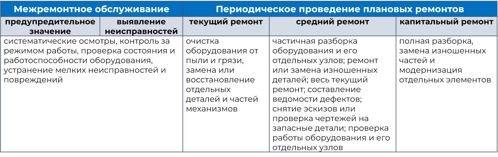

Организация эксплуатации и ремонта электродвигателей
Система планово-предупредительного ремонта (ППР), которая призвана гарантировать безотказную функциональность электротехнического оборудования, включая электродвигатели.
Формы организации ремонта электрооборудования по системе ППР
Организация эксплуатации по системе планово-предупредительного ремонта
Межремонтный период – это период работы электрооборудования между двумя плановыми ремонтами.
Ремонтный цикл – межремонтный период между двумя плановыми капитальными ремонтами.